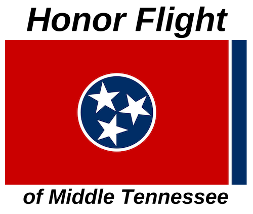
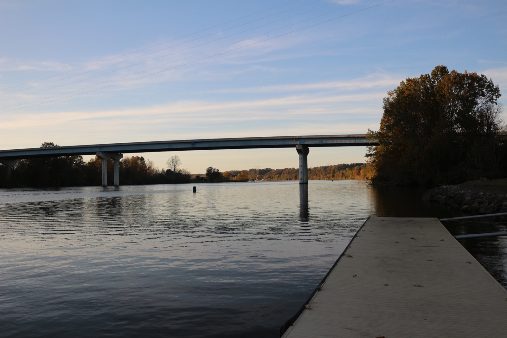
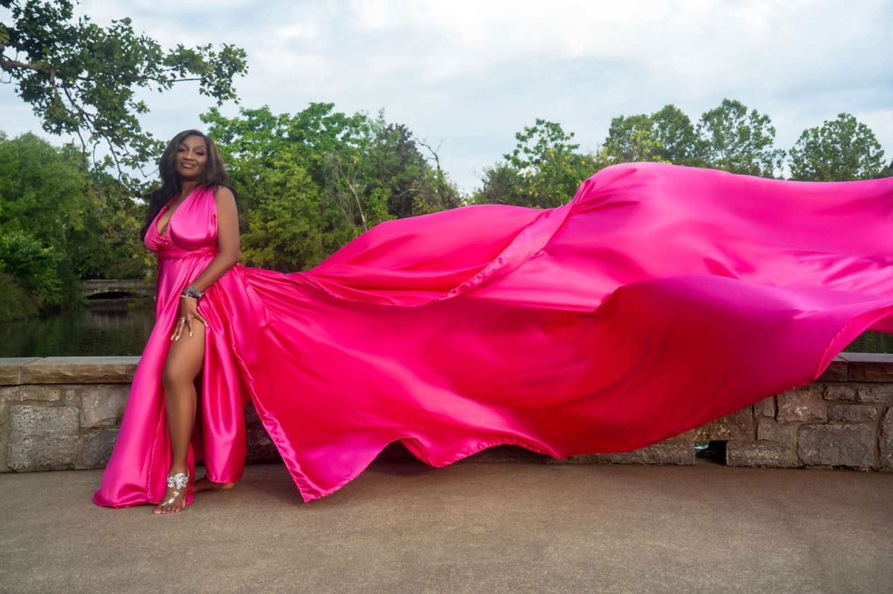
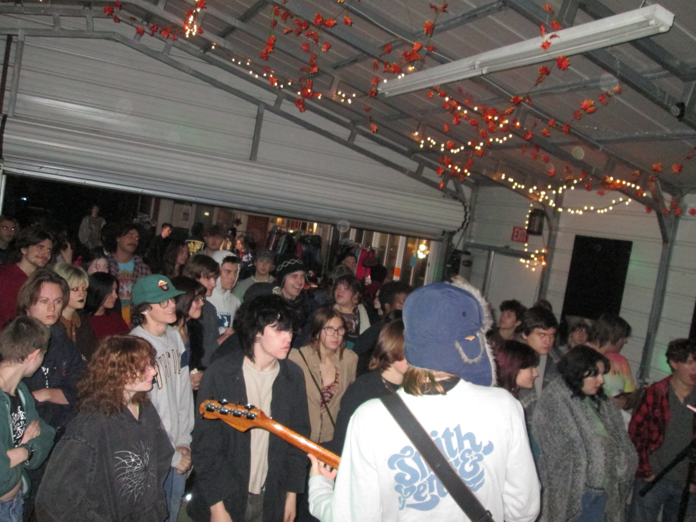
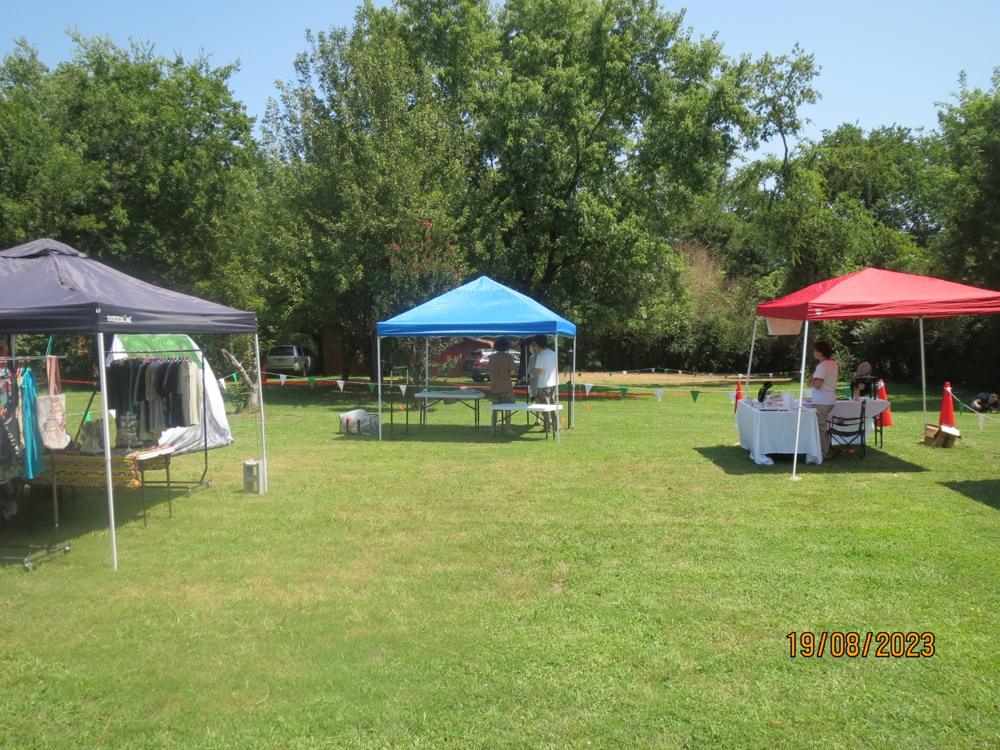
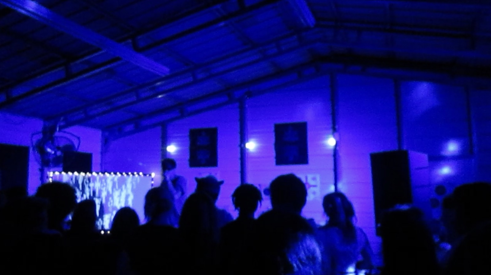
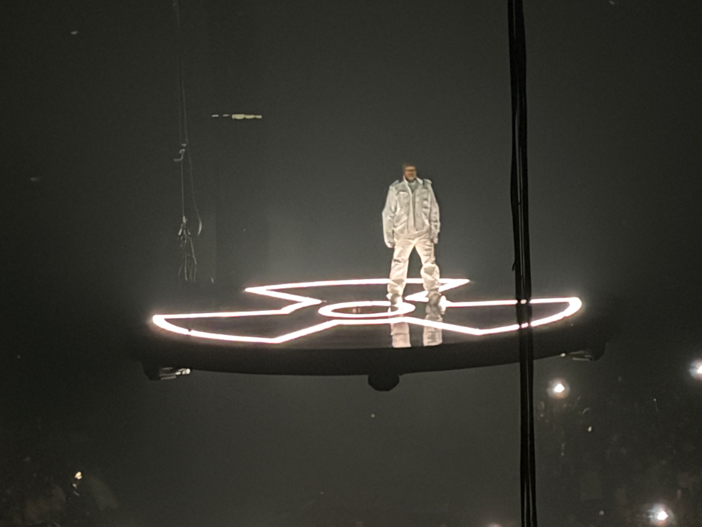

Education
Middle Tennessee State University
B.S. in Public Relations & Advertising, minor in Tourism & Hospitality. May 2026; 3.8 GPA.
the space
Creative, solution-oriented communications professional with experience in community-focused campaigns, programs, and events across digital and in-person spaces.
Open full résumé ↗Education
B.S. in Public Relations & Advertising, minor in Tourism & Hospitality. May 2026; 3.8 GPA.
Professional experience
Plans family formation events and handles calendars, registration, volunteers, materials, setup, newsletters, and digital communication.
Professional experience
Leads 35–40 staff members, builds daily programming, communicates with families, and keeps a high-energy environment running safely.
Relevant experience
Built campaign messaging, media outreach, and donor communication as part of a student team increasing veteran participation and support.
Skills
Google Workspace, Microsoft Office, Canva, Adobe, Final Cut Pro, presentation development, public speaking, training coordination, and internal/external communication.
Honors
1st Place, MTSU Tourism Proposal Competition (2024). John Seigenthaler Chair Scholarship (2023).

Strategic communications campaign to deepen veteran participation and donor engagement.

Tourism proposal competition project grounded in place, people, and a strong public story.

Visual campaign work shaped around experience, identity, and a memorable destination.

Outdoor gathering and local creative programming.

Vendors, live production, and community energy.

Live event concept and crowd experience.

Study abroad & more

Edited by me

My favorite hobby